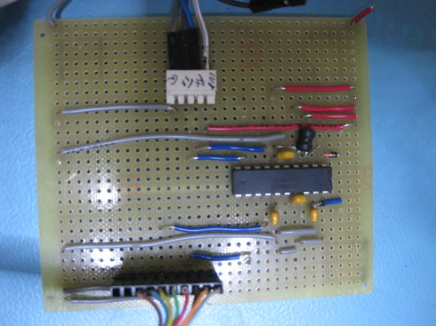

Most of our gadgets have serial ports that work at 1V8 or 3V3 single-ended; our serial concentrator expects true RS422 or RS232, at ±12 to ±25V. So we need to provide a level converter/driver to convert between the low level single-ended signals on the boards, and the high-level differential voltages for transmission to the serial concentrator.
We used the suggested circuit in the Manufacturer’s Datasheet, laid out on a piece of perfboard.

This picture shows one wired to convert a single channel; because most of our gadgets need only a three-wire interface, you can convert two channels with one chip. The converter is powered from the gadget: provide 1V8 or 3V3 depending on the signalling level.